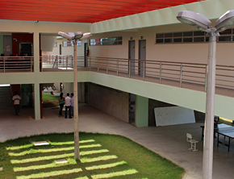
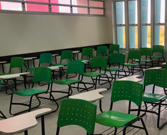
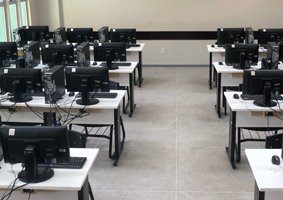
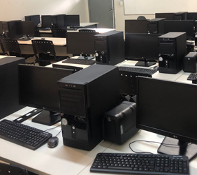
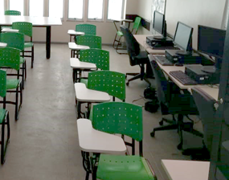

Infraestrutura
Infraestrutura do Campus
Para oferecer uma formação de qualidade, a Graduação Tecnológica em Redes de Computadores do IFCE campus Jaguaribe dispõe de excelente infraestrutura, com laboratórios de ponta e salas de aula adequadas para o processo de aprendizagem. Conheça alguns espaços do IFCE campus Jaguaribe.
Campus

Salas de Aula

Laboratório de Informática 1

Laboratório de Informática 2

Laboratório de Redes
